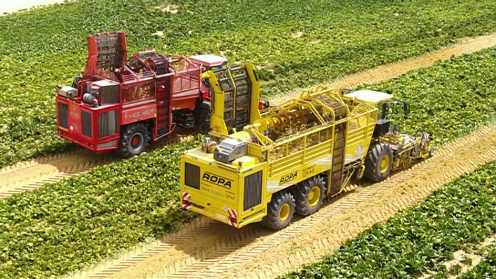
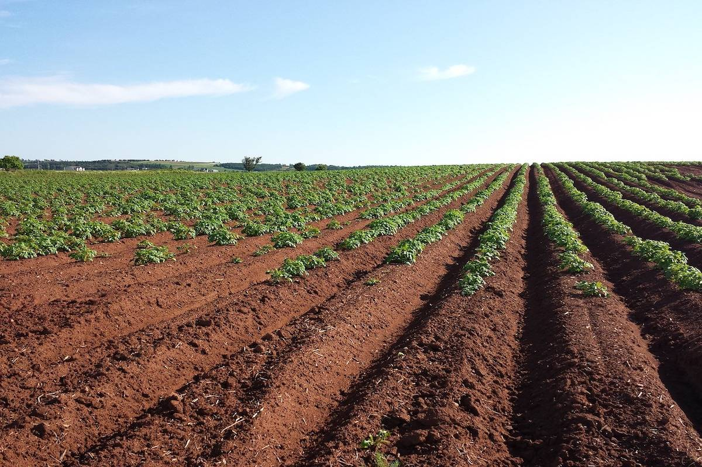

وصف المشروع
نشأ المشروع فى إطار معالجة المشاكل التى تصيب الرقعة الزراعية عن طريق العمل على زيادتها بنسبة 20% حيث تم توزيع الأراضى المخصصة للمشروع على مختلف أنحاء الجمهورية؛ وذلك لتقليل الفجوة الغذائية وزيادة مساحة الأرض المأهولة بالسكان من خلال تشييد مجتمعات سكنية مجهزة بأحدث التقنيات حول المناطق الزراعية ويعتبر هذا المشروع أولى الخطوات الحاسمة نحو مستقبل “التنمية المستدامة” وهو جزء لا يتجزأ من منظومة الإصلاح الإقتصادى. يشكل مشروع المليون ونصف المليون فدان إضافة لمجال تنمية التجمعات العنقودية المعنى بتعبئة وصناعة الأغذية والمشروبات بجانب التنمية الزراعية التى تمثل عصب المشروع. يتميز المشروع أيضاً بأنه يهدف إلى خلق مجتمعات سكنية لإستقطاب المستثمرين الأجانب والعمالة المحلية كما يتم توفير خدمات تعليمية وطبية فى محيط تلك المناطق.
المدن المنفذ فيها المشروع
في ثمان محافظات: " أسوان والمنيا ومطروح والوادى الجديد وقنا والإسماعيلية والجيزة وجنوب سيناء "؛ حيث تم اختيارهم بناء على قربهم من شبكة الطرق القومية والمناطق الحضارية وخطوط الإتصال بين المحافظات وذلك لسرعة تشييد المناطق العمرانية وتوفير كل من البنية الأساسية والخدمات بتلك المناطق.
مراحل المشروع
تم تقسيم المشروع على 3 مراحل :
- المرحلة الأولى: تضم المرحلة الأولى 9 مناطق تروى بالمياه الجوفية بإجمالى مساحة 500 ألف فدان : الفرافرة القديمة ( 30 ألف فدان ) الفرافرة الجديدة ( 20 ألف فدان ) منطقة المغرة ( 135 ألف فدان ) امتداد الداخلة ( 20 ألف فدان ) بينما توجد مناطق تروى سطحياً ؛ يتم تقسيمها كالتالى: قرية الآمل (3.5 آلاف فدان) توشكى (143 ألف فدان) منطقة غرب المراشدة (25.5 ألف فدان زائد 18 ألف فدان أخرى بنفس المنطقة ) وأخيراً يوجد بالمرحلة 25 ألف فدان رى آبار و80 ألف فدان تروى بالمياه الجوفية علاوة على وجود مساحات سيتم زراعتها بواسطة المحاصيل الإستراتيجية.
تضم المرحلة الثانية 9 مناطق أيضاً بمساحة قدرها 490 ألف فدان يتم ريها بالمياه الجوفية: منطقة الفرافرة القديمة ( 120 ألف فدان ) منطقة الفرافرة الجديدة ( 20 ألف فدان) الفرافرة الجديدة (20 ألف فدان) منطقة غرب كوم امبو ( 25 ألف فدان) المغرة ( 35 ألف فدان ) غرب المنيا (140 ألف فدان ) شرق سيوة ( 30 ألف فدان) جنوب شرق المنخفض ( 90 ألف فدان)
المرحلة الثالثة: تشمل 5 مناطق تروى بالمياه الجوفية، تمتد نحو مساحة 510 ألف فدان و تقسم كما يلى: الفرافرة القديمة ( 40 ألف فدان) منطقة الطور بجنوب سيناء (20 ألف فدان) امتداد جنوب شرق المنخفض ( 50 ألف فدان) غرب المنيا (250 ألف فدان) منطقة غرب «2» (150 ألف فدان)

أهداف المشروع
1- زيادة مساحة الرقعة الزراعية إلى 9.5 ملايين فدان بدلاً من 8 ملايين فدان أى بنسبة 20٪ 2- إعادة هيكلة الريف المصرى لتكون نواته مجموعة قرى نموذجية تعالج مشكلات الماضى ورسم صوراً أكثر وضوحاً للمستقبل. 3- توسيع الحيز العمراني لاستيعاب الزيادة الطبيعية فى نمو السكان عن طريق إنشاء مجتمعات عمرانية متكاملة وعصرية. 4- الإستفادة القصوى من موارد مصر فى المياه الجوفية. 5- زراعة المحاصيل التى تساعد على سد الفجوة الغذائية والتى تدر عائد مالى ضخم للبلاد. 6- زيادة صادرات مصر من المحاصيل الزراعية لتصل إلى 10 مليون طن فى السنة. 7- إقامة صناعات مرتبطة بكل من النشاط الزراعى والثروة الحيوانية والصناعات الغذائية 8- تمكين الشباب عن طريق خلق فرص عمل حيث يوفر مشروع المليون فدان ونصف أكثر من عن 25 ألف فرصة عمل. 9- كما يتم عمل دراسات متقدمة ليتم زراعة المحاصيل الاستراتيجية مثل القمح والذرة وأخرى تصديرية مثل الفول السودانى والبازلاء.

موارد المشروع
- المورد المائي المتمثل فى المياه الجوفية - الطاقة الشمسية كأحد الموارد المتجددة النظيفة لتوليد الكهرباء • المسئول عن إدارة المشروع: شركة “الريف المصري الجديد” وهى احدى المشاريع القابضة يصل رأس مال الشركة إلى 8 مليار جنيه وستكون تابعة لقوانين هيئة الاستثمار